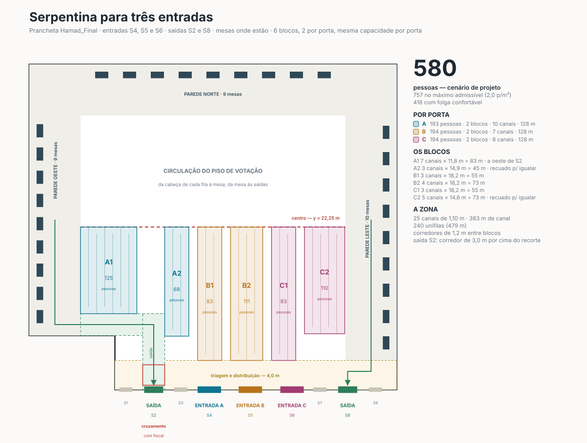

Três entradas — S4, S5 e S6 —, saídas em S2 e S8, mesas onde estão nas três paredes. A fila ocupa a zona da fachada sul até o centro, em seis blocos, dois por porta, com a mesma capacidade em cada porta. Cabem 580 pessoas; a saída S2 custa 29% disso.
Canais norte-sul de 1,10 m, corredores de 1,20 m entre blocos, triagem de 4,0 m junto à fachada, faixas perimetrais de 7,0 m preservadas. O corredor de saída para S2 passa por cima do recorte sudoeste e desce até a porta.

| Bloco | Porta | Canais | Profundidade | Canal | Pessoas | Observação |
|---|---|---|---|---|---|---|
| A1 | A · S4 | 7 | 11,8 m | 83 m | 125 | a oeste do corredor S2 |
| A2 | A · S4 | 3 | 14,9 m | 45 m | 68 | recuado para igualar |
| B1 | B · S5 | 3 | 18,2 m | 55 m | 83 | |
| B2 | B · S5 | 4 | 18,2 m | 73 m | 111 | |
| C1 | C · S6 | 3 | 18,2 m | 55 m | 83 | |
| C2 | C · S6 | 5 | 14,6 m | 73 m | 110 | recuado para igualar |
| A 128 m · B 128 m · C 128 m | 25 | 383 m | 580 | |||
| Configuração | Confortável | Projeto | Máximo | Situação |
|---|---|---|---|---|
| 6 blocos, 2 por porta | 416 | 580 | 757 | usa o canto oeste |
| 3 blocos, 1 por porta | 356 | 497 | 648 | perde o canto oeste |
| 9 blocos, 3 por porta | — | — | — | inviável |
3 blocos perdem o canto oeste. Com um bloco só por porta, os 7 canais a oeste do corredor de S2 não podem ser usados: se fossem o único bloco da porta A, as portas B e C teriam de encolher a 83 m para manter a igualdade. O ótimo ignora o canto e para em 497.
6 blocos usam o canto. A porta A ganha A1 no canto e completa com A2 a leste do corredor. É a única configuração que respeita as regras e ainda aproveita toda a largura — 17% acima de 3 blocos.
9 blocos não fecham. Oito blocos a leste de S2 exigem sete corredores; sobram 14 canais para 8 blocos, menos de 2 por bloco. Com dois canais não há serpentina, há um corredor de ida e volta. Se "múltiplos de 3" for lido como áreas por porta e não como blocos físicos, cada porta subdivide seus dois blocos com sinalização, sem barreira a mais.
S2 fica em x ≈ 17 m — dentro da largura da zona de fila, não no flanco como S8. Levar até ela quem votou nas paredes oeste e norte tem três custos.
Três metros de largura da zona para o corredor vertical. Seis metros de profundidade nos sete canais do canto oeste, porque o corredor passa por cima do recorte. E um cruzamento: quem entra por S4 e vai para A1 atravessa o fluxo de saída a caminho de S2. É um cruzamento de pedestres com fiscal — rotineiro, mas é o único ponto do desenho onde entrada e saída se tocam, e está marcado na prancha.
| Variante | Projeto | Máximo | Por porta | Cruzamentos |
|---|---|---|---|---|
| S2 e S8 abertas — o pedido | 580 | 757 | 193 | 1 |
| S2 fechada, tudo sai por S8 / S7 | 747 | 975 | 249 | 0 |
Quem votou nas paredes oeste e norte circula pelo piso norte e desce pela faixa leste até S8 ou S7. O corredor de S2 desaparece, o canto oeste ganha profundidade, o cruzamento some. O preço é uma caminhada de até ~60 m para quem votou na parede oeste e todo o egresso concentrado num só lado — S8/S7 comportam o fluxo (~1.300 saídas/h no pico), mas é uma decisão de evacuação que o responsável de incêndio do RDS precisa ver.
| Perfil | t/eleitor | Pico | Na rua · S2 aberta (580) | Na rua · S2 fechada (747) |
|---|---|---|---|---|
| Base | 60 s | 415 | 0 | 0 |
| Pico de manhã | 60 s | 899 | 319 | 152 |
| Base | 75 s | 1.188 | 608 | 441 |
| Pico de manhã | 75 s | 1.746 | 1.166 | 999 |
| Pico de manhã | 90 s | 2.671 | 2.091 | 1.924 |
A ordem de grandeza continua sendo decidida pelo tempo por eleitor, não pelo desenho da fila. Entre 60 e 75 segundos a rua passa de uma manhã difícil para o estado normal do dia.